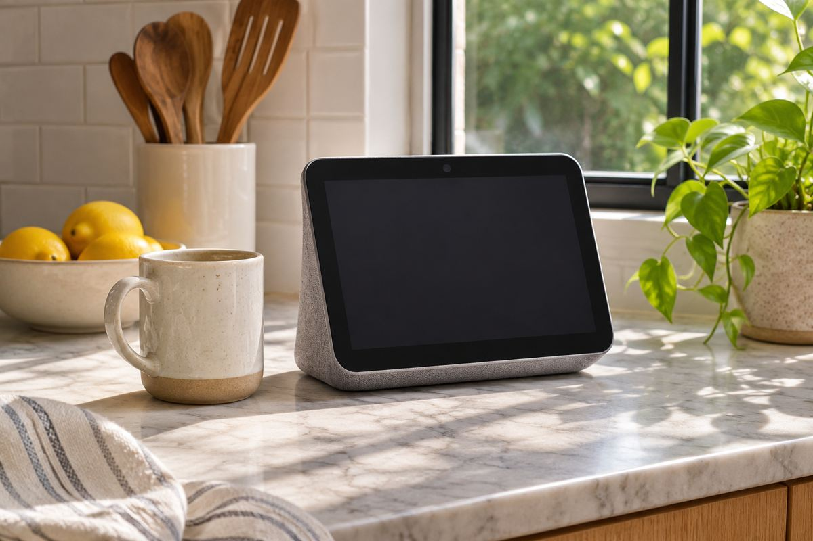

전자기기 / EXPLAINED
애플 홈뷰, 11월 13일 출시 예정…공용 화면의 개인화는 어떻게 작동하나
미국 발표 가격은 299달러다. 얼굴 인식과 연동 기기의 잠금 상태가 메시지·일정 표시를 좌우한다.

애플의 7인치 가정용 디스플레이 홈뷰가 11월 13일 미국 등 첫 판매 시장에서 출시를 앞두고 있다. 제품 발표와 미국 사전 주문은 10월 13일에 시작됐다. 미국 발표 가격은 탁상형과 벽걸이형 모두 299달러다. 두 모델의 판매 개시일은 같지만 설치 형태와 음향 구성은 다르다. 이번 미국 발표에 한국 출시일과 국내 판매가는 제시되지 않았다.
홈뷰는 애플이 음악 재생과 영상통화, 스마트홈 조작을 집 안의 공용 화면에 넣은 기기다. 리퀴드 레티나는 애플이 이 제품의 디스플레이에 쓰는 이름이며, 7인치는 대각선 길이다. 화면은 달력이나 타이머를 표시하고 호환 조명과 다른 가정용 기기를 관리하는 데 쓰인다. 같은 화면을 여러 사람이 번갈아 본다는 점에서 한 사람이 휴대하는 아이폰이나 아이패드와 사용 환경이 다르다. 애플은 이 차이를 다루기 위해 등록한 사람을 얼굴로 구별하는 기능을 넣었다.
개인 내용이 열리는 조건
애플은 메시지와 캘린더 같은 개인 내용을 표시할 때 얼굴 인식과 연동된 아이폰 또는 아이패드의 상태를 함께 확인한다고 밝혔다. 등록된 사람이 인식되고, 연결한 기기가 가까이 있으며, 그 기기의 잠금이 최근에 해제돼야 한다. 제품 발표는 개인 정보를 읽는 기능을 이 조건에 묶어 설명한다. 예를 들어 가족 공용 위치에서 타이머를 볼 때와 개인 일정을 호출할 때는 화면이 접근하는 정보의 종류가 다르다. 구입 전에 어떤 구성원에게 어떤 연동 기기가 필요한지 확인할 이유다.
A18 칩의 시큐어 익스클레이브는 카메라와 마이크 데이터 처리 영역을 나머지 시스템과 분리하는 구조다. 애플 설명에 따르면 시리 요청에는 기기 내 처리나 프라이빗 클라우드 컴퓨트가 사용될 수 있다. 하드웨어 안에서 일부 감지 정보를 처리하는 것과 모든 음성 요청을 인터넷 없이 수행하는 것은 별개의 기능이다. 사용자가 가진 기기의 애플 인텔리전스 지원 여부와 사용하는 서비스, 언어에 따라 가능한 요청을 따로 살펴야 한다.
탁상형은 화면을 세우는 받침대에 저음을 내는 부품을 넣었다. 벽걸이형은 벽 설치를 전제로 두 개의 드라이버와 별도 음향 조정을 적용한다는 설명이다. 두 모델의 미국 가격이 같아도 설치 위치와 소리가 퍼지는 조건, 전원 배선은 다르다. 주방 조리대에 놓을 때는 화면을 보기 편한 각도가 중요하고, 복도 벽에 달 때는 전원 위치와 화면 앞을 오가는 사람의 동선을 고려하게 된다. 이는 제품 구조를 바탕으로 한 사용 환경 분석이며 실제 음질 평가는 아니다.
호환 기기를 제어하는 기능도 연동 조건을 따로 봐야 한다. 집에 이미 조명이나 온도 조절기가 있다면 제품마다 지원하는 연결 방식과 앱이 다를 수 있다. 홈뷰의 화면 크기나 가격만으로 기존 장치의 조작 가능 여부를 알 수는 없다. 애플의 기기 목록과 사용 중인 기기의 모델 정보를 함께 확인할 사안이다.
미국 외에도 애플은 호주, 캐나다, 인도, 뉴질랜드, 영국, 싱가포르 등을 초기 공급 일정에 포함했다. 구체적인 기능은 지원 서비스와 연동 기기에 따라 달라질 수 있다. 11월 13일은 안내된 시장의 공급 시작일이다. 국내 구매 가능 여부, 사용 언어의 지원 범위, 기존 스마트홈 기기와의 연결은 해당 시장의 공식 판매 및 지원 안내가 확인되는 시점에 판단할 수 있다.